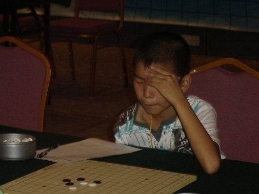

少儿棋手介绍――沈星涛
首页
少儿五子棋
#1 少儿棋手介绍――沈星涛 作者：黄药师 发表时间：2010-6-8 12:48:00



沈星涛 二段 浙江海宁南苑小学 2009年浙江赛儿童组第一名，2009年参加全国少年儿童五子棋锦标赛，沈星涛以不败战绩勇夺儿童组个人金牌。
［此帖子已被 黄药师 在 2010-6-8 12:52:30 编辑过］
［ 茗弈小刀 于 2010-6-9 16:55:54 时奖励此帖[金币加 20 威望加1］
#2 Re:少儿棋手介绍――沈星涛 作者：黄药师 发表时间：2010-6-8 13:25:25
=======上图对应的爱五子棋谱代码如下，以便你拆解：========
h8h7j6i7i6h6j8i8i9j9g6g7j7f8e9j4i5k10l11k8h10k7k9k5g11f12f10h12g9g10e7h9e11d12e10e8e12e13d8c7b10c9d11h11c10
======================================================2009 全少赛（苏）蒋哲宇（白）VS（浙）沈星涛（黑） 黑胜
［此帖子已被 黄药师 在 2010-6-8 13:27:01 编辑过］
#3 Re:少儿棋手介绍――沈星涛 作者：老黄 发表时间：2010-6-8 17:33:19
谱应该打错了。
#4 Re:少儿棋手介绍――沈星涛 作者：钟梦 发表时间：2010-6-16 11:16:31
有前途的小孩阿。。。